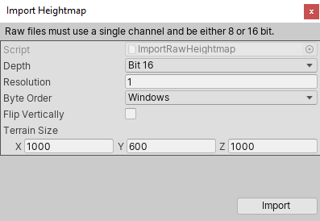
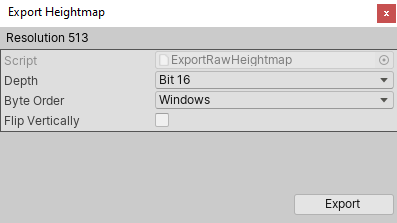

影响高度的地形工具（如 Raise or Lower Terrain 和 Set Height）使用称为高度贴图的灰度纹理。Unity 将地形上每个点的高度表示为矩形数组中的值。此数组用灰度高度贴图来表示。高度贴图内置于地形中，并且高度贴图中存储的值用于定义地形上每个点或顶点的高度。
可在 Unity Editor 中导入和导出高度贴图。要使用真实世界的高度数据来复制地标（例如珠穆朗玛峰）或在外部编辑器（例如 Photoshop）中处理高度贴图图像时，此功能很有用。还可以使用 3D 建模应用程序（例如 Houdini 和 World Machine）来生成地形，然后将地形作为高度贴图导入到 Unity 中。
最好将高度贴图存储为 RAW 文件。RAW 文件使用与大多数图像和景观编辑器兼容的 16 位灰度格式。Unity Editor 可以为地形导入和导出 RAW 高度贴图文件。
要在 Editor 中访问导入和导出设置，请在 Inspector 中选择 Terrain 组件，然后单击 Terrain Settings 按钮（工具栏中的齿轮图标）。
在 Texture Resolutions (On Terrain Data) 下，有两个标记为 Import Raw 和 Export Raw 的按钮。
Import Raw 允许 Unity 从 RAW 文件格式读取高度贴图，并在 Editor 中生成此高度贴图。

Export Raw 允许 Unity 将高度贴图从 Editor 写入 RAW 文件格式。

| 属性 | 描述 |
|---|---|
| Depth | 确定 Unity 在导入或导出的高度贴图中每个像素使用的位数。 • Bit 16：使用 16 位（2 个字节） • Bit 8：使用 8 位（1 个字节） |
| Resolution | 所导入的高度贴图的纹理分辨率（宽度和高度）。 |
| Byte Order | 确定 Unity 如何为导入或导出的高度贴图中的每个像素进行字节排序。这主要适用于 16 位深度高度贴图，与平台有关。 |
| Flip Vertically | 确定 Unity 是否沿 x 轴垂直翻转导出的高度贴图。 |
| Terrain Size | Unity 将导入高度贴图应用到的地形的大小。 |
2020–06–30 页面已修订
更新了内容以反映新的 UI 和选项